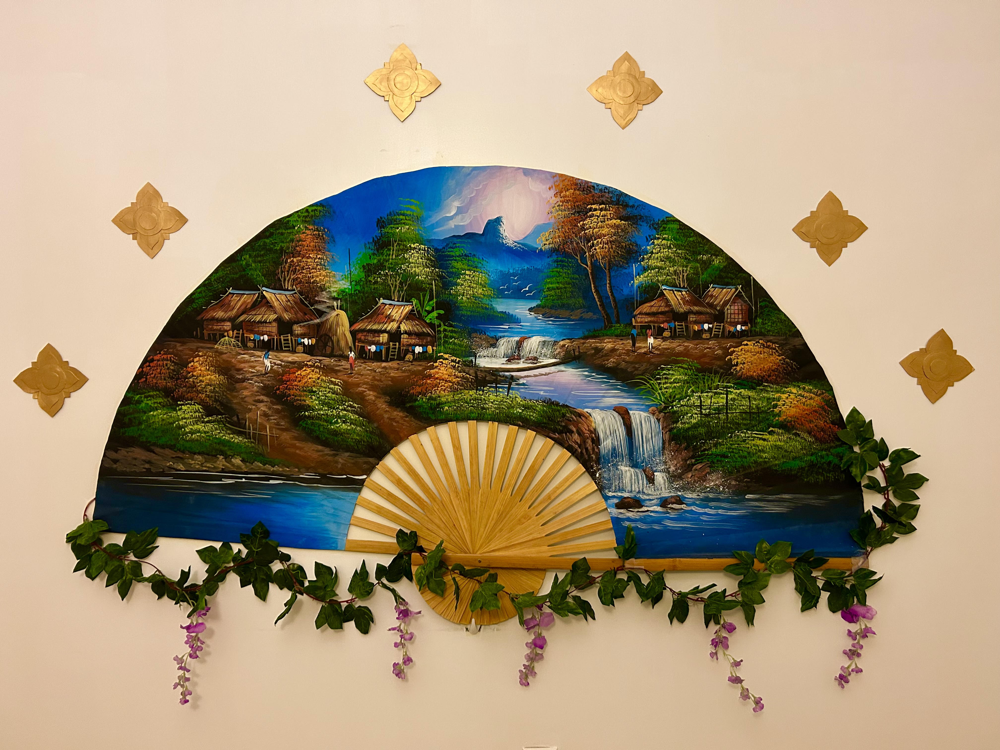
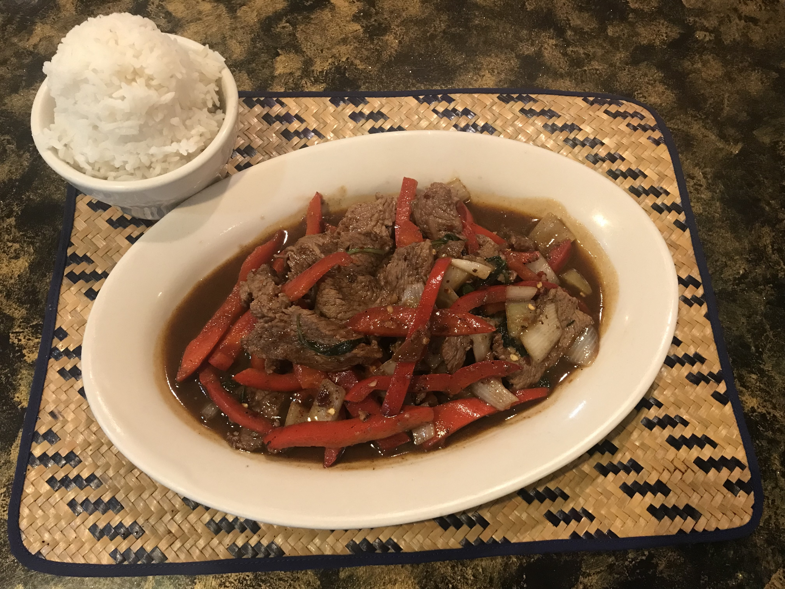
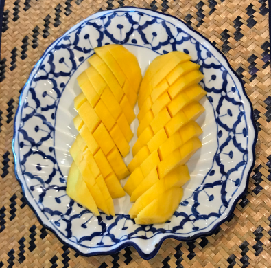
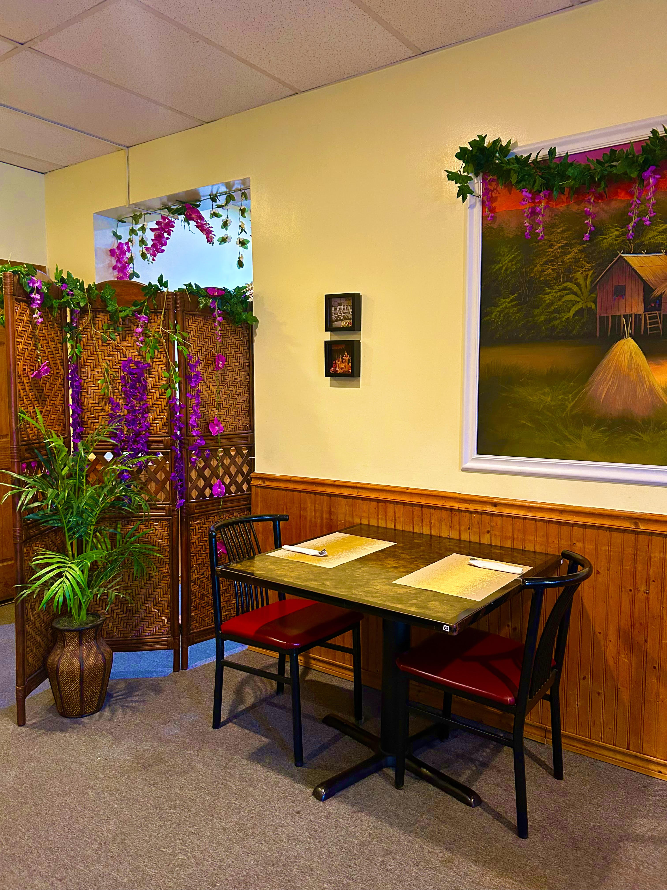

Your local family-owned Thai restaurant.
We are located in Owings Mills, MD on the lower level of the Valley Village Shopping Center on Reisterstown Rd.
Note: Seating ends 30 minutes before closing.

Our History
Although the location has been a Thai restaurant for more than two decades, the current Thai family has own the establishment since August 2007.

Our dishes are classic Thai favorites, influenced by the family's Southern Thai roots.


You will always find family members working in the kitchen to proudly provide you with a piece of their culture.

Come dine-in with us!
Here We Are!
9191 Reisterstown Road,
Owings Mills, MD 21117
We are located at the intersection of Reisterstown Road and McDonough Road.
You can find us on the lower level of the Valley Village Shopping Center
(back of the building), directly below (behind) the Orange Theory Gym.
Contact Us
Phone Number: (410)-581-0449
Please call us during business hours to:
- place takeout orders
- make reservations
- ask questions about our menu, catering, special business hours, concerns about allergies and dietary restrictions, directions, etc.
If you want your order delivered, contact either Uber Eats or GrubHub directly.
Thank you.
Frequently Asked Questions
Is Thai food spicy?
Answer: Although Thai people love their chilies, not all Thai food is spicy and
most items on our menu can be made not spicy or with varying spicy levels.
Can I have more than one type of meat or protein?
Answer: Yes, but there is an upcharge when you ask for either multiple types of
protein or extra protein. The upcharge fee will depend on the protein. These
prices are listed in the menu section:
Chicken or Beef: $3.50
Shrimp: $5.00
Scallop: $6.00
Tofu: $3.00
Can I change the veggies in the dish?
Answer:Yes, but this excludes most appetizers. Please check with your server. We
may not have certain vegetables.
How long will my order take?
Answer: Due to the fact all items are made to order, time will vary depending on
how large the order is, how many orders are ahead of your order, and the time of
day. Generally an average sized order (three items) should take 15 – 20
minutes.
Are you open all day?
Answer: We close the restaurant for an hour and a half between lunch and dinner hours during our
weekday business days. On weekends we are only open for dinner hours.
Which curry is the spiciest?
Answer: Traditionally green curry (gang khiao) is the spiciest; however, we make our curries
at an easily tolerable spice level for most people by default instead of the typical spicy that
Thai people are accustomed to. Since we make almost everything to order, we can make any curry
as spicy or as mild as desired, given a 1 – 5 scale.
What can I substitute instead of white jasmine rice?
Answer: Unfornately brown rice is not an option; however, you can substitute rice with either
rice noodles or steam mixed vegetables for a small upcharge.
Do you deliver?
Answer: We currently rely on both Uber Eats and Grubhub for delivery. To order delivery, you
will have to place your order through their platform instead of contacting us directly.
Pickup and dine-in orders are best made by contacting us directly.
Do you take reservations?
Answer: Yes, when you call to place your reservation, we will need to know your name, phone
number, day and time of reservation, and how many people will be with you. If more or fewer
people are attending, please inform us as soon as possible; we cannot guarantee we will be able
to accomodate more people as we are a small restaurant.
We are a large group, do we need to make a reservation?
Answer: We have limited space since we are a small restaurant so we encourage groups of six or
more including children to reserve their table as soon as possible.
Do you cater?
Answer: Yes, check out our catering menu for more information.
Do you offer gift cards?
Answer:Absolutely! You can choose the gift card value, but there is a minimum of $25 for one gift card. Our gift cards are rechargeable so you can keep on adding money to your card without needing to purchase a new one.